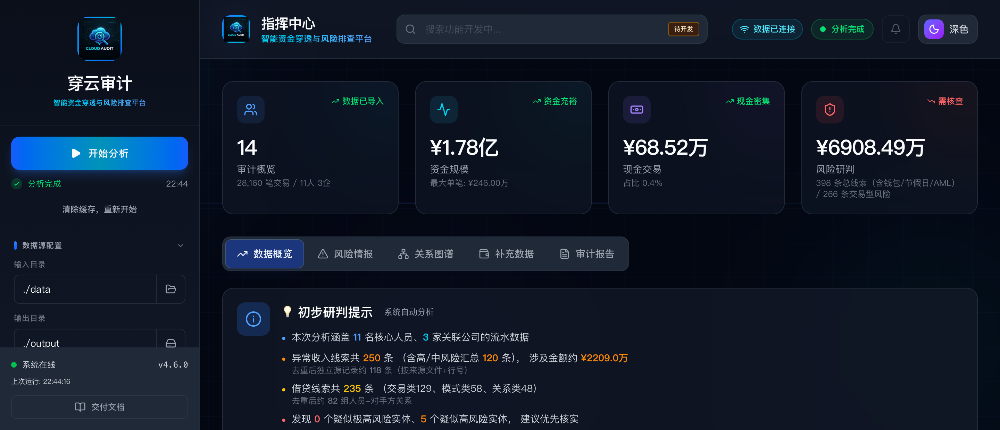

穿云审计 (F.P.A.S)
当前版本：
v4.6.0
当前交付形态：Windows 单机离线 one-folder 包
启动方式：当前默认交付包不是执行fpas.exe；交付根目录没有业务exe入口。请双击start_fpas.cmd，或在需要隐藏控制台时双击start_fpas_silent.vbs；这两个入口都会调用包内runtime/python/python.exe启动后端；如需一键停止当前交付包的后端服务和受控浏览器实例，双击stop_fpas.cmd
浏览器打开：如未设置FPAS_BROWSER_EXE，程序会先尝试系统默认浏览器；若默认浏览器不适配前端，会改用本机可用的 Chrome / Edge / Firefox / Chromium / Brave 打开http://127.0.0.1:8000/dashboard/；源码环境才运行python api_server.py
Win7 + 内网用户：先安装交付包根目录win7-prerequisites/里的 4 个补丁和 Win7 Chrome；如果系统自带浏览器无法挂载前端，请把该 Chrome 设为默认浏览器后再启动
交付包文档：根目录同时附带浏览器可直接打开的README.html2026-03-24交付补丁：Win7 交付态已补上“目录打开”兼容修复，以及stop_fpas.cmd对受控浏览器/后端的强制回收修复；在使用随包受控浏览器的前提下，停止后应可直接删除整个交付目录
原始数据准备：把所有轮次的协查原始文件按查询原样放在同一个根目录，不必改名、不必重组；银行、微信、支付宝、财付通及其他协查数据都放进去，然后在前端把该目录选为“输入目录”
应用内文档入口：启动后访问/docs/readme，或在左下角点击“交付文档”
穿云审计是一套面向审计核查、资金穿透和关联排查的离线系统。它不是通用 BI 工具，也不是“导入 Excel 看图表”的轻报表工具。它的核心目标只有一个：
把原始数据、清洗结果、分析缓存、正式报告和前端展示统一到一条可复核的主链上，尽量减少口径漂移和报告打脸。

首次使用帮助
适合谁看
本 README 主要面向：
- 首次接触系统的使用者
- 负责运行分析、查看报告、导出结果的业务人员
- 需要确认“哪个文件是最终结果、哪个文件只是内部检查产物”的交付接收人员
如果你主要关心研发和二次开发，文末保留了最少量的开发入口，其余技术细节请看 docs/ 下专题文档。
第一次使用前先确认
- 当前默认交付包不是双击
fpas.exe；交付根目录没有业务exe入口。正式入口是start_fpas.cmd，静默入口是start_fpas_silent.vbs - 上述两个入口都会调用包内
runtime/python/python.exe启动后端，目标机不需要额外安装 Python - 如未设置
FPAS_BROWSER_EXE，程序会先尝试系统默认浏览器；若默认浏览器不适配前端，会改用本机可用的 Chrome / Edge / Firefox / Chromium / Brave 打开http://127.0.0.1:8000/dashboard/ - 交付根目录同时附带
README.html，可直接用浏览器查看排版版使用说明 - 如需一键停止当前交付包启动的后端服务和关联启动窗口，请双击
stop_fpas.cmd；该脚本会优先结束本交付包的后端进程和受控浏览器守护进程，并强制回收受控浏览器实例；在使用受控浏览器时，停止后应可直接删除整个交付目录；如果最终回退到了系统默认打开方式，则无法保证自动关闭你手工打开或系统复用的浏览器窗口 - 如果目标机是
Windows 7且处于内网，请先进入交付根目录win7-prerequisites/，先装 4 个补丁，再装随包附带的 Win7 Chrome；如果系统自带浏览器打不开前端或页面异常，请把该 Chrome 设为默认浏览器后再启动 - 如不想改系统默认浏览器，也可以在启动前设置环境变量
FPAS_BROWSER_EXE=浏览器完整路径，显式指定兼容浏览器 - 只有源码运行才需要本机具备
Python 3.9+ - 原始协查数据可以放在任意目录，
data/只是默认示例目录，不是强制要求 - 正式访问入口固定为
http://127.0.0.1:8000/dashboard/ - 如需重跑全量分析，应接受当前选中输出目录下的分析产物会被刷新
Windows 7 交付包最小环境支持清单
如果目标机是 Windows 7，不要只看“能不能双击启动脚本”，而要先确认这台机器满足下面这组最小运行基线。
硬门槛：
- 操作系统至少为
Windows 7 SP1 x64 - 交付包根目录
win7-prerequisites/内置了这套最小前置文件，Win7 + 内网用户必须先装完再运行程序 - 必装补丁 1：
Windows6.1-KB4490628-x64.msu - 必装补丁 2：
Windows6.1-KB4474419-v3-x64.msu - 必装补丁 3：
Windows6.1-KB2533623-x64.msu - 必装补丁 4：
Windows6.1-KB2999226-x64.msu - 必装浏览器：
109.0.5414.120-64Bit-ChromeStandaloneSetup64.exe - 如果系统自带浏览器无法正常挂载前端、打开
/dashboard/空白或脚本异常，请将上面的 Chrome 设置为系统默认浏览器后再启动 - 交付包内置 Python 运行时的位数必须与目标系统位数一致；当前已验证链路为
Windows 7 SP1 x64 + Python 3.8.10 x64 portable-runtime bundle
安装顺序建议：
- 先装
Windows6.1-KB4490628-x64.msu - 再装
Windows6.1-KB4474419-v3-x64.msu - 再装
Windows6.1-KB2533623-x64.msu - 再装
Windows6.1-KB2999226-x64.msu - 最后安装
109.0.5414.120-64Bit-ChromeStandaloneSetup64.exe - 全部装完后，再双击
start_fpas.cmd或start_fpas_silent.vbs - 如需停止本交付包，双击
stop_fpas.cmd
最小核对命令：
wmic qfe | findstr 4490628
wmic qfe | findstr 4474419
wmic qfe | findstr 2533623
wmic qfe | findstr 2999226
dir C:\Windows\System32\ucrtbase.dll验收时还应额外确认：
- 可以访问
http://127.0.0.1:8000/dashboard/ - 双击
start_fpas.cmd后，如果没有拉起界面，不要立刻重复送包，先检查交付根目录下是否生成startup_fatal.log - 当前前端生产包基于
Vite 7 + React 19，默认按现代浏览器能力交付；如果目标机只有旧版 IE，请先补齐浏览器条件，再进行正式验收
最短上手路径
第一次使用时，按这条最短路径就够了：
按原样放好协查数据 -> 双击 start_fpas.cmd -> 等待或打开 http://127.0.0.1:8000/dashboard/ -> 选输入/输出目录 -> 开始分析 -> 看 HTML 报告 -> 必要时回看 cleaned_data
python api_server.py 仅属于源码调试环境，不是当前默认交付包的运行方式。
第一次启动怎么做
1. 准备数据
- 把所有轮次的协查原始文件放在同一个根目录下
- 保持查询导出时的原始目录结构和文件名，不需要手工改名、合并或拆散
- 这个根目录里可以同时包含银行流水、账户信息、房产、车辆、证券、理财、微信、支付宝、财付通等各类协查数据
data/只是默认示例目录；如果你的数据在别的盘符或别的文件夹，也可以直接在前端选择那个目录
示例：
某次案件原始数据/
├── 第一轮/
│ ├── 银行业金融机构交易流水（定向查询）/
│ ├── 银行业金融机构账户信息（定向查询）/
│ ├── 支付机构交易明细（支付宝）/
│ └── 微信支付相关数据/
├── 第二轮/
│ ├── 银行业金融机构交易流水（定向查询）/
│ ├── 财付通交易明细/
│ └── 其他协查材料/
└── 第三轮/
└── ...原则只有一条：
- 所有轮次原始文件按查询原样放在一个总目录里，然后在前端把这个总目录指定为“输入目录”
2. 启动系统
交付使用优先按下面方式启动。当前默认包不提供业务 fpas.exe 入口：
双击 start_fpas.cmd如需隐藏控制台窗口，可改为：
双击 start_fpas_silent.vbs如果你在源码环境下运行，才使用：
python api_server.py启动后访问：
http://127.0.0.1:8000/dashboard/说明：
- 这是正式访问入口
- 交付环境下也应以这个地址为准
- 当前
portable-runtime交付包的默认入口不是fpas.exe，而是start_fpas.cmd/start_fpas_silent.vbs - 这两个启动器会调用包内
runtime/python/python.exe，不会依赖目标机额外安装 Python - 如果未设置
FPAS_BROWSER_EXE，启动器会先尝试系统默认浏览器；若默认浏览器不适配前端，会回退到本机可用的兼容浏览器并进入这个地址 - 如果需要关闭自动打开浏览器，可在启动前设置环境变量
FPAS_AUTO_OPEN_BROWSER=0 - 如果需要显式指定兼容浏览器，可在启动前设置环境变量
FPAS_BROWSER_EXE=浏览器完整路径 - 前端开发服务器
5173只用于调试，不是正式交付入口
3. 选择目录并开始分析
进入前端后，先确认左侧“数据源配置”：
- 输入目录：选择你刚才存放原始协查数据的总目录
- 输出目录：选择本轮分析结果要写入的位置
确认无误后，再完成对象归集/范围确认，并点击“开始分析”。
系统会依次生成三层结果：
output/cleaned_data/output/analysis_cache/output/analysis_results/
输入目录 / 输出目录可以自己选吗
可以，当前程序已真实支持手动切换输入目录和输出目录。
使用方式：
- 在左侧“数据源配置”里直接填写，或点击文件夹按钮选择目录
- 输入目录决定本轮扫描的原始数据根目录
- 输出目录决定
cleaned_data、analysis_cache、analysis_results的实际生成位置
生效方式：
- 前端修改后会同步到后端当前活动路径
- 点击“开始分析”时，分析任务会直接使用当前选中的输入目录和输出目录
- 如果只是切换输出目录，前端还会尝试恢复该目录下已有的缓存和报告结果
保留方式：
- 你在前端选过的路径会保存在本机浏览器
localStorage - 下次重新打开前端时，系统会优先恢复这些路径，再同步到后端
需要注意：
- 分析运行中不允许切换输入/输出目录
- 如果改了输出目录，本轮之后的报告、缓存和导出结果都会写到新目录
第一次跑完后怎么判断是否成功
至少检查这 4 件事：
- 能正常打开
http://127.0.0.1:8000/dashboard/ - 当前输出目录下的
analysis_results/已经生成初查报告.html - 当前输出目录下的
analysis_results/已经生成核查结果分析报告.txt和资金核查底稿.xlsx - 前端“审计报告”页能看到正式报告，而不是只剩空白卡片或报错提示
4. 查看结果
建议按下面顺序看：
/dashboard/中的“审计报告”页- 当前输出目录下的
analysis_results/初查报告.html - 当前输出目录下的
analysis_results/核查结果分析报告.txt - 当前输出目录下的
analysis_results/资金核查底稿.xlsx - 如需追溯原始明细，再看当前输出目录下的
cleaned_data/
如果导入了微信 / 支付宝 / 财付通样本，也可以在 /dashboard/ 的“电子钱包”页查看电子钱包摘要、预警和未归并微信账号。
5. 哪些文件是正式交付结果
优先认这几类：
output/analysis_results/初查报告.htmloutput/analysis_results/核查结果分析报告.txtoutput/analysis_results/资金核查底稿.xlsxoutput/analysis_results/专项报告/下的正式附录
不要把下面这些当成业务终稿：
output/analysis_results/qa/output/analysis_cache/*.json- 各类中间语义包、检查包、调试文件
程序结构
下面展示的是交付视角下最值得认识的主结构。它不是完整源码清单，但足够帮助你判断“入口在哪、结果在哪、追溯去哪看”。
cj-project/
├── api_server.py # 后端唯一入口 /dashboard/ 也由它承载
├── data_cleaner.py # 银行流水清洗、标准化、去重
├── financial_profiler.py # 人员/家庭/公司画像与收支口径汇总
├── suspicion_engine.py # 疑点识别与问题卡来源之一
├── investigation_report_builder.py # 正式报告、report_package、检查产物构建
├── report_quality_guard.py # 正式报告质量门控
├── html_report_consistency_audit.py # HTML 最终展示数字反查
├── build_windows_package.py # Windows 离线打包
├── dashboard/
│ ├── src/
│ │ ├── components/ # 页面与核心卡片
│ │ ├── services/ # 前端 API 调用
│ │ ├── contexts/ # 全局状态
│ │ └── types/ # 前端类型定义
│ └── dist/ # 前端生产构建，交付时由后端直接提供
├── classifiers/ # 交易分类引擎
├── detectors/ # 疑点检测器
├── schemas/ # 数据模型
├── output/
│ ├── cleaned_data/ # 清洗成品层
│ ├── analysis_cache/ # 分析缓存层
│ └── analysis_results/ # 正式结果层
├── docs/
│ ├── assets/ # README 和交付截图等静态资源
│ └── change_logs/ # 按日期记录的重要修改
├── data/ # 默认原始协查数据入口（也可在前端指定任意目录）
└── tests/ # 回归测试输出目录也可以这样理解：
output/
├── cleaned_data/
│ ├── 个人/
│ └── 公司/
├── analysis_cache/
│ ├── profiles.json
│ ├── derived_data.json
│ ├── suspicions.json
│ ├── graph_data.json
│ └── ...
└── analysis_results/
├── 初查报告.html
├── 核查结果分析报告.txt
├── 资金核查底稿.xlsx
├── 专项报告/
└── qa/系统主线怎么理解
一句话主链
原始数据 -> 清洗成品 -> 分析缓存 -> 正式报告 -> 前端展示
首次使用时要抓住的 3 个位置
当前输入目录：原始数据入口，默认是data/，也可以在前端改成任意目录output/analysis_results/：正式交付结果集中区output/cleaned_data/：发生争议时最先回看的事实层
三层输出各自负责什么
output/cleaned_data/
这是事实层。
如果你在核对：
- 某个人到底有多少笔银行流水
- 某家公司流入流出到底是多少
- 某一笔钱能不能回到具体来源文件和来源行号
优先看这里。
output/analysis_cache/
这是统一语义层。
这里保存的是系统汇总后的画像与分析结果，例如：
profiles.jsonderived_data.jsonsuspicions.jsongraph_data.json
正式报告构建器和前端都优先使用这里的结果，不应该各自再回原始 data/ 重新拼口径。
output/analysis_results/
这是交付层。
这里保存的是最终给人看的结果：
- HTML 报告
- TXT 报告
- Excel 底稿
- 专项报告
- 报告目录清单
真实收入 / 真实支出是什么意思
系统不会把银行原始总流入直接当成“可支配收入”。
当前口径是：
- 先统计原始总流入、原始总流出
- 再识别并剔除不应算作真实收入/支出的内部循环项
常见剔除项包括：
- 本人账户互转
- 理财 / 定存本金循环
- 银行产品回摆、分期冲销
- 家庭成员互转
- 报销、退款、冲正类回流
所以：
总流入 / 总流出是原始盘子真实收入 / 真实支出是剔除内部循环后的口径
这也是为什么系统会同时保留原始流量和真实流量两组数。
报告中心现在展示什么
前端“审计报告”页面现在面向业务使用者，只展示正式可读产物。
会展示的内容：
- 主报告摘要
- 优先对象
- 问题卡
- 卷宗覆盖
- 正式报告预览与下载入口
不会直接展示的内容：
qa/目录检查产物.json结构化缓存- 内部语义包
- 研发排障文件
如需追溯，使用者可以直接打开：
cleaned_data/个人cleaned_data/公司analysis_results
但业务视图层不会主动把内部 QA 物料暴露出来。
电子钱包页面展示什么
前端“电子钱包”页对应的是微信、支付宝、财付通这类电子钱包数据。
这个页面主要展示：
- 电子钱包主体摘要
- 高风险电子钱包预警
- 未归并微信账号
- 主体映射线索和主要对手方
需要注意：
- 电子钱包数据属于补充层，不覆盖银行主清洗链
- 它会进入
analysis_cache/walletData.json，供前端页面和部分风险视图复用
归集配置怎么生效
前端“审计报告”中的“归集配置”不是只影响页面展示，它会影响报告组织方式，并会在保存后参与后续分析复用。
真实机制如下：
- 当当前输入目录下还没有
primary_targets.json时，系统会先根据当前输出目录中的analysis_cache自动生成一份默认归集配置供界面使用。 - 如果存在官方同户人 / 户籍数据，默认主归集人优先取户主。
- 如果没有足够的官方户籍数据，系统会回退到自动识别的家庭单元或独立单元，此时默认锚点不一定等于“本人”。
- 在你手动调整“主归集人”并点击“保存配置”后，系统会把正式配置写入当前输入目录下的
primary_targets.json。 - 后续重新分析、生成 TXT 报告、生成 HTML 报告时，系统都会优先读取这个
primary_targets.json，而不是继续只用自动推断结果。
需要特别区分两类文件：
data/或当前输入目录下的primary_targets.json
这是正式归集配置，只有手动保存后才会生成，并会被后续分析复用。
- 当前输出目录
analysis_cache/primary_targets.auto.json
这是系统在未发现正式配置时自动生成的临时快照，用于复核和复现，不作为正式用户配置优先加载。
这意味着：
- 第一次运行后，系统可以先给出默认归集方案
- 但只有你手动确认并保存后，这份归集方案才会成为后续分析默认使用的正式配置
检查函数怎么工作
这里的“检查函数”不是做业务分析，而是做质量门控和一致性检查。它们的目的，是防止正式报告、前端展示和底层缓存再次各说各话。
可以把这套逻辑理解成 4 道闸门：
先整理统一语义包 -> 再检查正式报告 -> 再反查 HTML 展示 -> 最后判断旧检查包是否过期
1. report_package.json 是怎么来的
实现位置：
investigation_report_builder.py- 关键函数：
save_report_package_artifacts()
它会把正式报告里真正需要被前端和检查器复用的内容，整理成统一语义包，包括：
- 主报告摘要
- 附录摘要
- 个人 / 家庭 / 公司报告条目
- 问题卡
- 证据索引
- QA 检查结果
你可以把它理解成“正式报告的结构化镜像”。
前端报告中心优先读它，而不是再自己拼一套摘要。这样做的目的，是让前端展示、正式报告摘要和内部检查尽量共用同一份语义来源。
2. run_report_quality_checks() 主要检查什么
实现位置：
report_quality_guard.py
它不是简单看文件存不存在，而是检查几类关键一致性问题，例如：
- 是否生成了正式 HTML；如果没有，报告目录清单是否正确回退到 TXT
- 个人财务缺口解释，是否真的出现在正式 TXT / HTML 中
- 报告里如果写了“闭环”“团伙”等强结论，语义事实层是否真有对应证据
- 正式报告是否泄露了
analysis_cache之类的内部路径 - 高风险问题卡是否带有最基本的
evidence_refs和原因说明
它的输出会写到：
output/analysis_results/qa/report_consistency_check.jsonoutput/analysis_results/qa/report_consistency_check.txt
这些文件是系统内部质量门控依据，不是业务终稿。
如果这里失败，通常意味着“正式报告里缺了该写明的解释”或者“结论强度高于证据支撑”。
3. audit_html_report() 主要检查什么
实现位置：
html_report_consistency_audit.py
这个脚本会直接解析最终 HTML，再反向核对：
- 人员概览卡片里的总流入、总流出、工资收入、真实收入
- 工资章节里的年度工资表和总额
- 家庭章节、公司章节中的关键摘要
它比“看脚本有没有跑完”更严格，因为它直接对最终展示结果下手。
换句话说，前面几层都对，不代表最后渲染出来就一定对；这个审计就是专门防这种“底层对了、展示错了”的情况。
输出位置：
output/analysis_results/qa/html_report_consistency_audit.jsonoutput/analysis_results/qa/html_report_consistency_audit.txt
4. 系统什么时候会自动刷新这些检查产物
实现位置：
api_server.py- 关键逻辑：
_report_package_requires_refresh()
只要出现下面任一情况，系统就会认定旧检查包过期并尝试刷新：
- QA 规则版本变了
- 报告语义逻辑文件更新了
- 正式报告文件比旧语义包更新
- 人员 / 家庭 / 公司条目中缺少必要解释字段
qa/下关键检查文件缺失
这套逻辑的作用，是防止：
源码改了、报告改了，但前端还在读旧语义包。
5. 检查失败后应该先看哪里
建议按这个顺序排：
output/cleaned_data/是否已经包含正确事实output/analysis_cache/中的画像和汇总是否已同步更新output/analysis_results/qa/report_package.json是否还是旧包output/analysis_results/qa/report_consistency_check.txt和html_report_consistency_audit.txt报的是什么
如果前两层是对的，而后两层报错，通常问题已经不在原始数据，而在报告构建或展示层。
哪些结果最值得优先看
如果你是第一次接手一轮分析，建议按这个顺序：
output/analysis_results/初查报告.html
- 最适合快速浏览
output/analysis_results/核查结果分析报告.txt
- 适合正式存档和文本检索
output/analysis_results/资金核查底稿.xlsx
- 适合人工追溯和对账
output/cleaned_data/
- 适合逐笔核对
如果你看到前端和报告数字不一致，不要先猜 UI 出错，先看：
output/cleaned_data/output/analysis_cache/profiles.jsonoutput/analysis_results/qa/report_package.json
常见问题
1. 我到底应该以哪里为准？
- 核对交易事实：以
output/cleaned_data/为准 - 核对正式汇总口径：以
output/analysis_cache/为准 - 核对交付成稿：以
output/analysis_results/为准
2. 为什么前端页面不展示 QA 和 JSON 文件？
因为这些文件是内部检查和结构化语义产物，普通业务人员看不懂，也容易造成误解。前端业务视图只应展示最终可阅读的正式结论。
3. 为什么“真实收入”比“总流入”小很多？
因为系统会剔除本人互转、理财本金循环、家庭互转、退款冲正等内部循环项。总流入是原始盘子，真实收入是剔除后的口径。
4. 现在还需要单独启动前端开发服务器吗？
普通使用不需要。正式访问只看：
http://127.0.0.1:8000/dashboard/版权与免责
- 当前交付版本及界面中的版权标识为
© 811所纪委，用于标识本次交付归属。 - 本仓库代码和文档可以按需要开放查看、审计和二次开发。
- 但项目按当前状态提供，不默认承诺后续持续升级、专项适配、兼容性修复、环境部署支持或结果解释支持。
- 在正式生产、审计办案或对外引用前，使用方仍应结合本单位数据、流程和运行环境自行复核。
附：最少量调试入口
普通使用可以跳过本节。只有在需要本地调试时才看这里。
如果你确实需要调试前端，可以使用：
python api_server.py
cd dashboard
npm run dev如果你需要生成前端生产构建：
cd dashboard
npm run build如果你需要 Windows 离线打包：
python build_windows_package.py --preflight说明：
- 在 macOS 上，当前只能执行
--preflight预检和npm run build这类交付前准备，不能产出最终 Windows one-folder 包 - 目标是
Windows7+时，最终打包机应为Windows + Python 3.8.x - 真正产出离线交付包时，再在 Windows 机器上执行：
python build_windows_package.py更深入的研发说明请看：